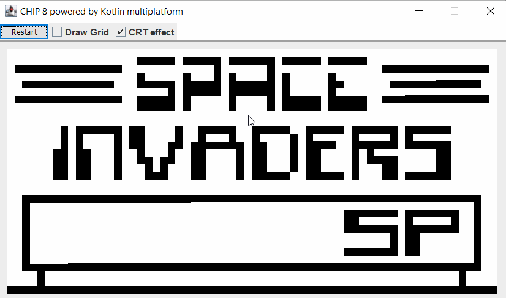
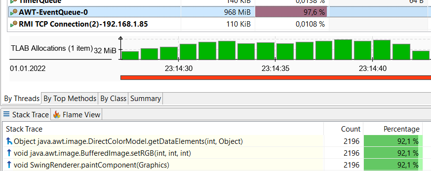
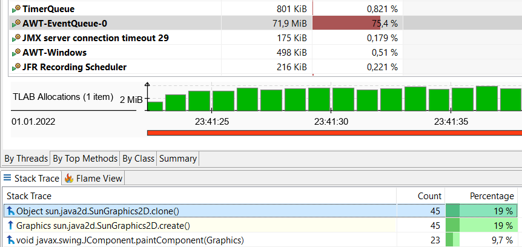

Speed up rendering with Swing
In my CHIP-8 emulator

During coding my CHIP-8 emulator, I came across the requirement for a few different rendering targets. The simplest one would have been a terminal, but the ergonomics are not that great when it's done with print statements and I also found some annoyances when using terminal - at least under windows - where clicking and resizing distorts and corrupts the rendering.
One of my target platforms was JVM (locally installed on the user's machine or embeeded in the executable), so Swing is a valid option. The API is quite as simple as it can get.
Now there's a problem: The emulator runs at 500Hz. That means we need to be able to run a step (consisting of any instruction, included rendering) in 2ms with a resolution of 64 x 32. That's a million instructions per second.
Additionally, I implemented two rendering modes: A simple one that does exactly what CHIP-8 tells us: Setting a pixel black or white. A CRT-style one, that lets active pixels fade out over a short time. Both rendering modes share, that the emulator's framebuffer is a two dimensional boolean array.
Here's a story about how I managed to achieve the goal without multithreading.
Simple Mode
Let's take a look at the simple rendering mode first.
Version 1: for x * y set color and fillRect
Straight forward, iterate over all pixels, set the color black or white and fill a rectangle of a pixel's dimension.
class SwingRenderer private constructor(private val keyListener: KeyListener) : JPanel(), Renderer {
override fun paintComponent(g: Graphics) {
super.paintComponent(g)
emulator?.frameBuffer?.let { frameBuffer ->
frameBuffer.forEachColumnIndexed { columnIndex, column ->
column.forEachRowIndexed { rowIndex, row ->
g.color = if (row) { black } else white
g.fillRect(
padding + (columnIndex * pixelWidth),
padding + (rowIndex * pixelHeight),
pixelWidth,
pixelHeight
)
}
}
}
}
}
The code is as simple as the performance was bad. Didn't reach the goal of 2ms with that.
Version 2: clear, for x * y if black fillRect
Instead of rendering all pixels every time, the screen can be cleared and then only the black pixels need to be filled. The speed of rendering does now depend to a degree on how many pixels are black. When the screen contains a lot of white, the step reaches 2ms, but the experience is not optimal. Quick profiling showed that indeed most time is still spent on fillRect.
Version 3: write to image and draw image in one go
So the fillRect call is too slow, we need to get rid of that. We can throw a lot of draw instructions onto an intermediate image and afterwards draw the image in one go. That way the rendering doesn't need to do a lot of slow calls on the canvas and instead does a lot of faster calls onto something else.
class SwingRenderer private constructor(private val keyListener: KeyListener) : JPanel(), Renderer {
private val bufferedImage = BufferedImage(
Display.dimension.x,
Display.dimension.y,
BufferedImage.TYPE_INT_ARGB,
)
override fun paintComponent(g: Graphics) {
super.paintComponent(g)
frameBuffer.forEachRowIndexed { rowIndex, row ->
row.forEachColumnIndexed { columnIndex, column ->
val color = if (column) black else white
bufferedImage.setRGB(
columnIndex,
rowIndex,
color.rgb
)
}
}
g.drawImage(bufferedImage, padding, padding,
Display.dimension.x * pixelWidth,
Display.dimension.y * pixelHeight,
null
)
}
}
Note that it's not sufficient now to only write the black pixels, because we would then need to clear the image to white first, as we did with the graphics object before. Such an API is however not present on the image object - it looks different and would need further action so I skip it for now. Besides that, goal achieved, everything runs as fast as needed for 500Hz.
CRT-style mode
As mentioned earlier, the emulator itself maintains and provides a two dimensional boolean array as a framebuffer. This is not enough for something that fades from on to off, we need more bits of information than two. Since I wasn't exactly reaching out for super high performance, I added a private framebuffer that was a two dimensional float array to the CRT renderer. I also added an update method that gets called after every regular step, so that the following code takes the given framebuffer of the renderer and updates the private framebuffer, automatically refreshing new pixels and fading out old ones:
override fun update(deltaSeconds: Float) {
emulator?.let { emulator ->
lastFrameBuffer.forEachIndexed { columnIndex, column ->
column.forEachIndexed { rowIndex, row ->
if (emulator.frameBuffer[columnIndex][rowIndex]) {
column[rowIndex] = 1.0f
} else if (row > 0) {
column[rowIndex] = kotlin.math.max(0f, row - 0.004f) // scale with delta seconds when no fixed time step present ;)
}
}
}
}
}
Version 1: Simple
Using the framebuffer copy containing floats now for rendering is straight forward. Instead of setting black color, we need to set a rgba color, containing alpha information. The API expects an Integer and uses only 8 bit (0 - 255). So we need to scale the float value between 0 and 1 to 0 and 255 and convert it into an int.
override fun paintComponent(g: Graphics) {
super.paintComponent(g)
g.color = white
g.fillRect(
padding,
padding,
Display.dimension.x * pixelWidth,
Display.dimension.y * pixelHeight
)
lastFrameBuffer.forEachIndexed { columnIndex, column ->
column.forEachIndexed { rowIndex, row ->
if (column[rowIndex] > 0) {
val alpha = (column[rowIndex] * 255).toInt()
bufferedImage.setRGB(
columnIndex,
rowIndex,
Color(black.red, black.green, black.blue, alpha).rgb
)
}
}
}
g.drawImage(bufferedImage, padding, padding,
Display.dimension.x * pixelWidth,
Display.dimension.y * pixelHeight,
null
)
}
This doesn't reach our goal of 500Hz anymore. The application suffers from stuttering and slow-downs. Analyzing with Java Mission Control shows a surprisingly large amount of garbage collections, with usually over 10ms durations. Taking a look at the allocations reveals that an awful lot of Color instances seem to be instantiated, but not a lot of other stuff
And it's true: The thight loop creates a Color instance for every pixel in the output image, always, because we need to pass in the alpha value.
Version 2: List as a color cache, compute if absent
With a list of size 256, we can create all colors we need once and reuse them, avoiding the recreation, eliminating the need for garbage collections. The index is an int and could be our given alpha value.
private val alphaColorCache = mutableListOf<Color?>().apply {
repeat(256) { add(it, null) }
}
override fun paintComponent(g: Graphics) {
// ...
val alpha = (column[rowIndex] * 255).toInt()
bufferedImage.setRGB(
columnIndex,
rowIndex,
(alphaColorCache.computeIfAbsent(alpha) { Color(black.red, black.green, black.blue, alpha) }).rgb
)
// ...
}
private fun <E> MutableList<E>.computeIfAbsent(alpha: Int, function: () -> E): E {
if (get(alpha) == null) add(alpha, function())
return this[alpha]
}
Results are still bad.
Of course this was just a silly quick shot and I had to pay the bill immediately. The above implementation creates a function instance per pixel instead of a color instance. I could have left this step out as it's easy to fix, but I though it's somewhat interesting what consequences can come with seamingly harmless code and what it means for the runtime behaviour of the application.
Version 3: List as a color cache, compute if absent and inline function
Without further ado, forcing the compiler to inline the lambda function is achieved by adding the inline keyword in Kotlin.
private inline fun <E> MutableList<E>.computeIfAbsent(alpha: Int, function: () -> E): E {
if (get(alpha) == null) add(alpha, function())
return this[alpha]
}
Now allocations look better:
Version 4: List as a color cache, precompute all colors
My first quick shot could have been a different one as well: Creating a look up table upfront that already contains all alpha colors. This is practical, as there are no more than 256 values at all.
private val alphaColorCache = mutableListOf<Color?>().apply {
repeat(256) { add(it, Color(black.red, black.green, black.blue, it)) }
}
override fun paintComponent(g: Graphics) {
// ...
val alpha = (column[rowIndex] * 255).toInt()
bufferedImage.setRGB(columnIndex, rowIndex, alphaColorCache[alpha].rgb)
// ...
}
Less common to do that in general code, but very common in computer graphics and indeed the simplest solution here. Now, the effect looks roughly like expected and the performance seem to be good enough.
Version 5: Eliminate garbage collections
The only thing that's left is that the performance is not steady, from time to time there are heavy slowdowns, like you can see in this recording (even though without recording the gif the slowdowns are not that intensive):

JMC again shows a lot of GC activity, now within a 20s time frame, the app made a total of 37s pauses. Most allocated instances are now of type int[] and this shows where the problem is found:

The method setRGB is implemented like this:
public void setRGB(int x, int y, int rgb) {
raster.setDataElements(x, y, colorModel.getDataElements(rgb, null));
}
while the last parameter of getDataElements is a pixel. When null is passed in, an array of int is allocated internally. So let's not use the setRGB method but the setDataElements directly and pass in a reusable variable.
private val pixel = IntArray(4)
private fun BufferedImage.setRGBEfficiently(columnIndex: Int, rowIndex: Int, color: Color) {
raster.setDataElements(
columnIndex, rowIndex, colorModel.getDataElements(color.rgb, pixel)
)
}
Nice, down to 2ms GC in 20s time frame. But the AWT thread is still allocating things.
Version 6: Eliminate more garbage collections
The most significant allocation looks like a defensive copy of the graphics context in the

It's the super.paintComponent(g) call. The method is implemented like this:
protected void paintComponent(Graphics g) {
if (ui != null) {
Graphics scratchGraphics = (g == null) ? null : g.create();
try {
ui.update(scratchGraphics, this);
}
finally {
scratchGraphics.dispose();
}
}
}
And the documentation states
[...] If you override this in a subclass you should not make permanent changes to the passed in Graphics. For example, you should not alter the clip Rectangle or modify the transform [...]. If you do not honor the opaque property you will likely see visual artifacts.
I am not 100% sure about that, but I don't use any transforms and don't need to care about opacity, because I always draw an image that covers the whole surface, so I will replace the super call with ui.update(g, this) and gone are again some allocations.
GC action is still at 2ms in 20s time frame though. So the last change didn't give a lot of benefit. Since my confidence is high enough about whether the last change can do any harm, I will leave it in - but keep in mind that there might lurk bug potential and add a comment for future me.
While using the application, this is not noticable anymore, so the goal of 500Hz can be seen as achieved.
Conclusions
The CRT mode puts a lot more pressure on the rendering stuff, for two main reasons:
a) The rendering needs to happen continuously instead of only on an instruction. This is because otherwise, the fade out would not be smooth but look like tearing.
b) More pixels are non-white and therefore must be filled.
This required a lot more optimization that wasn't necessary for the simple rendering. There have been some low hanging fruits that were easy to find through profiling with JMC. But optimization only goes so far - the application now spends most of the time rendering and it seems I can neither squeeze out more performance of the rendering nor reduce memory allocations in a sensible manner any further.